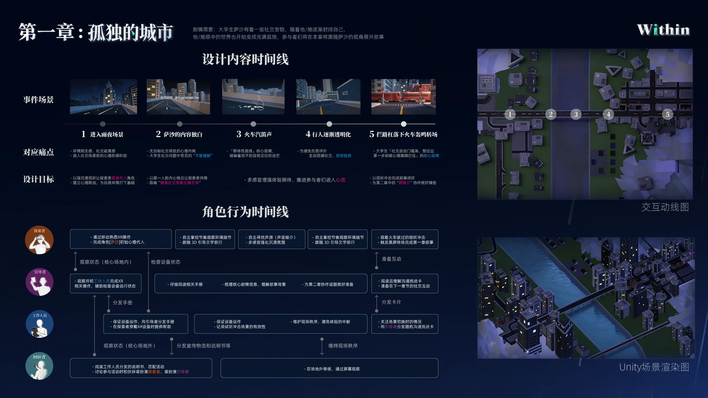

章节一
孤独的城市
第一章先把玩家放进一座被雨声、灯光与疾驰列车包围的夜城里。人在街景中不断穿行，却始终像被城市吞没一样难以被看见，这段进入体验不是直接开始协作，而是先为"社交隐身"的情绪建立身体感。
雨夜城市
疏离感
冰蓝色调
情绪铺垫
第一章先把玩家放进一座被雨声、灯光与疾驰列车包围的夜城里。人在街景中不断穿行，却始终像被城市吞没一样难以被看见，这段进入体验不是直接开始协作，而是先为"社交隐身"的情绪建立身体感。

进入雨夜街景、沿路穿行、火车呼啸与站台节点共同构成第一章的进入体验。
被环境压迫、难以被看见、难以主动开口，是社交启动前最强的心理阻力。
把"社交隐身"的心理状态转译为具身可感的空间体验，为后续协作建立情绪起点。